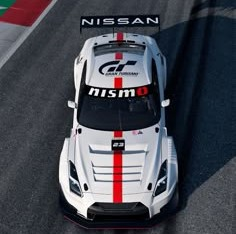

CARACTERISTICAS

Pero no solo su potencia lo hace especial, sino también su avanzada tecnología. El GT-R R35 cuenta con un sistema de tracción integral ATTESA E-TS, que distribuye la potencia de manera inteligente entre las cuatro ruedas, garantizando un agarre excepcional en cualquier condición. Además, su suspensión adaptativa Bilstein DampTronic ajusta la rigidez en tiempo real, permitiendo un equilibrio perfecto entre confort y desempeño deportivo. Su dirección precisa y su chasis reforzado le brindan una estabilidad impresionante, incluso en curvas a alta velocidad.
En su interior, el GT-R ofrece una combinación de lujo y deportividad. Su cabina está diseñada para el conductor, con asientos tipo bucket forrados en cuero y Alcantara, un panel de instrumentos digital con múltiples configuraciones y una pantalla táctil que muestra datos clave como la presión del turbo, la temperatura del aceite y la fuerza G.
El GT-R Nismo, desarrollado por Nissan Motorsport, lleva este superdeportivo al extremo con una configuración enfocada en el alto rendimiento. Su motor V6 biturbo de 3.8 litros ha sido optimizado para superar los 600 HP, acompañado de un sistema de escape de titanio que mejora la respuesta y el sonido del motor. Además, incorpora mejoras aerodinámicas como un alerón de fibra de carbono y un splitter frontal que aumentan la carga aerodinámica, mejorando la estabilidad a altas velocidades.
Para maximizar su desempeño en circuito, el GT-R Nismo cuenta con frenos de carbono-cerámica, suspensión ajustada y un chasis reforzado, lo que permite un manejo más preciso y agresivo en curvas. Gracias a estas mejoras, ha logrado tiempos impresionantes en trazados legendarios como Nürburgring, consolidándose como uno de los superdeportivos más temidos en la pista y respetados en la calle.